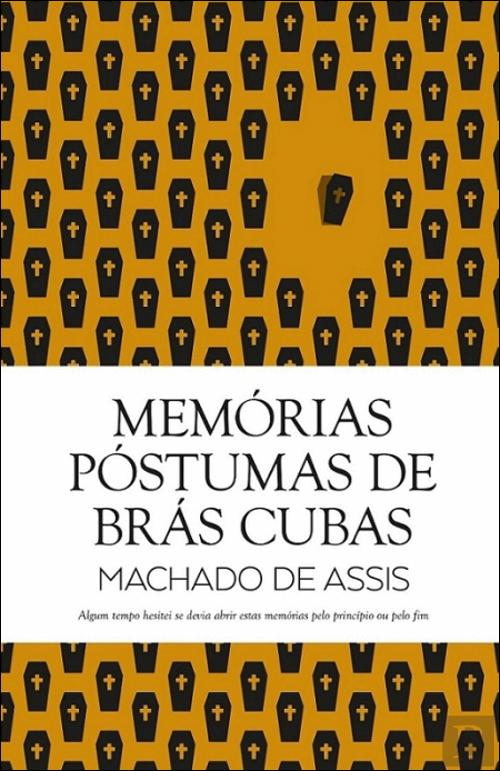

Biografía

- Joaquim Maria Machado de Assis nació en Río de Janeiro el 21 de junio de 1839.
- Era epiléptico y tartamudo.
- El futuro poeta tuvo que trabajar como vendedor de dulces, el oficio le permitió tener contacto con el con profesores y alumnos.
- Estudió francés y alemán, y su falta de formación reglada no le impidió convertirse en el fundador de la literatura brasileña, gracias a su enorme talento y tenacidad.
- Su primera obra narrativa era de carácter romántico
- Con la publicación de Memorias póstumas de Blas Cubas, marcó el inicio del realismo en Brasil.
- Las características principales de sus obras son: la introspección, el humor y el pesimismo en relación a la esencia del hombre y su relación con el mundo.
- Fundó la Academia Brasileña de las Letras en z1897.
- Murió el 29 de septiembre de 1908, en su vieja casa del barrio carioca de Cosme Velho.
Obras
Novelas



Memórias Póstumas de Brás Cubas, 1881
Quincas Borba, 1891
Dom Casmurro, 1899
Poesía


Americanas, 1875
Ocidentais, 1901
Poesías completas, 1901